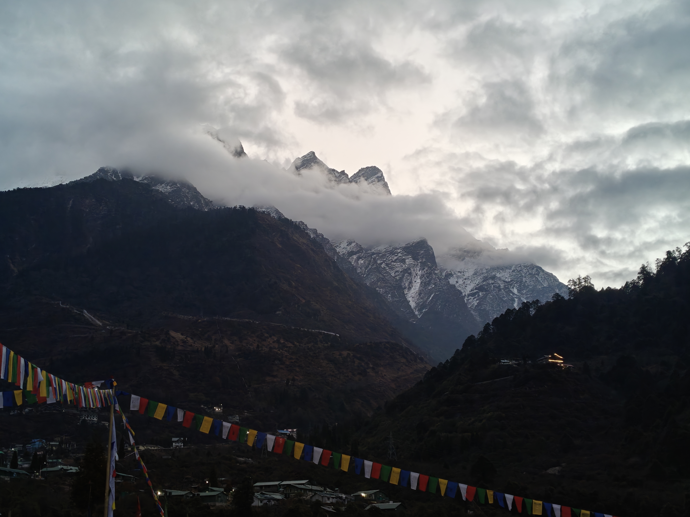
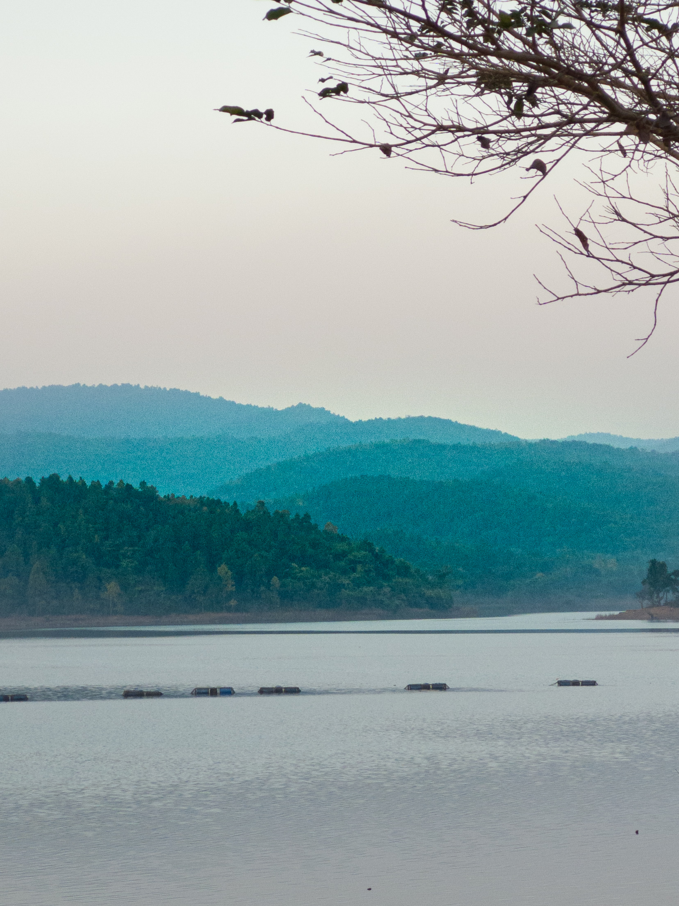
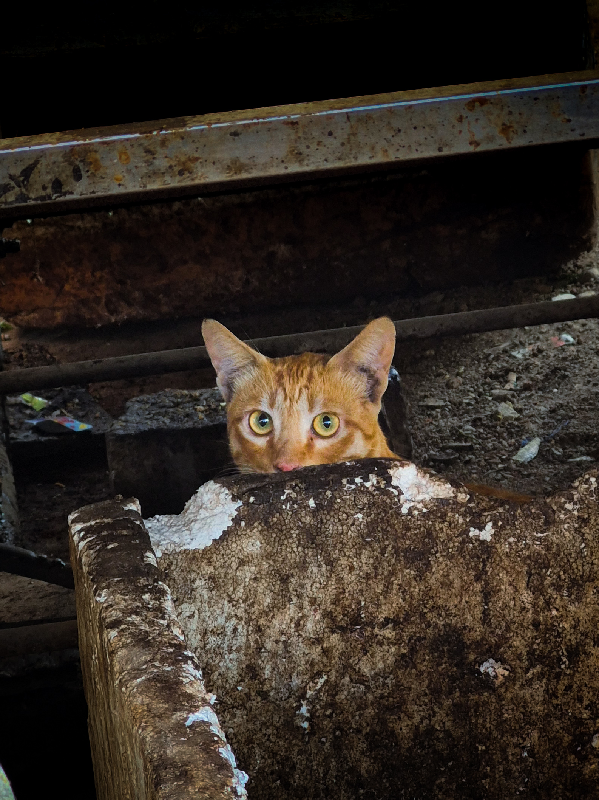
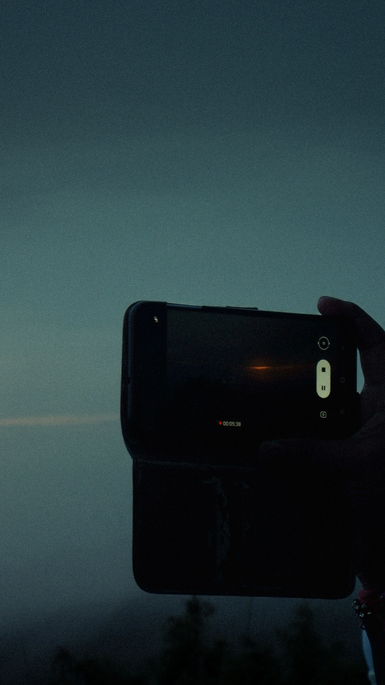
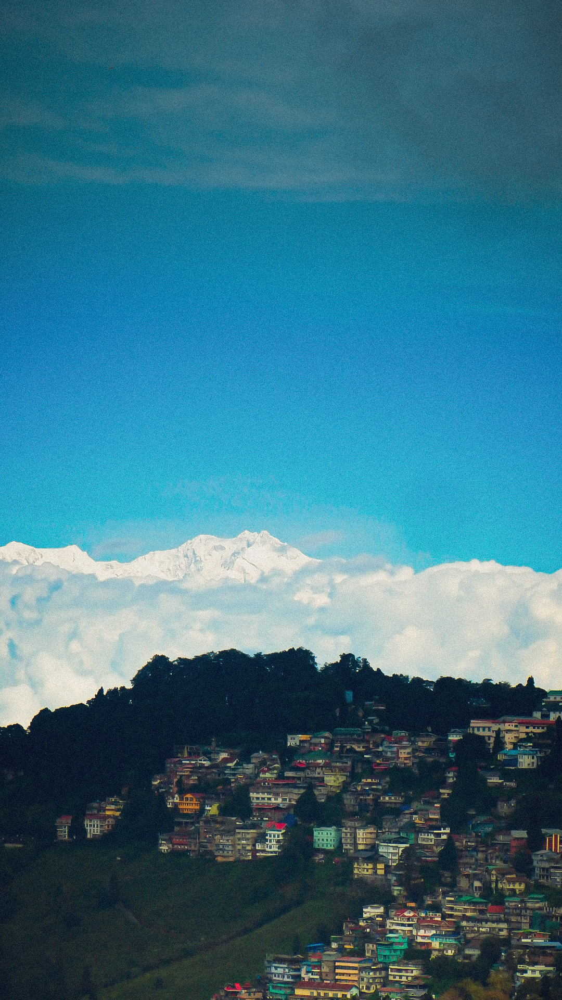
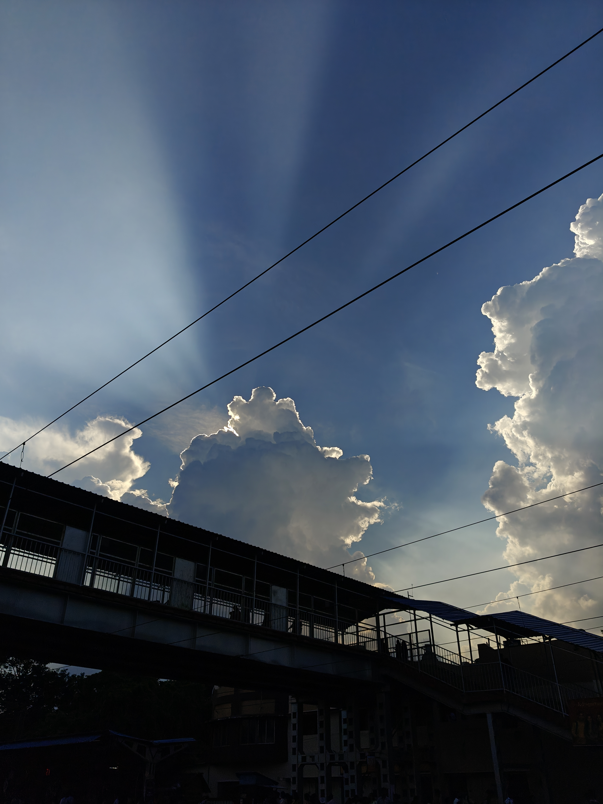

Lachung · March 2026
f/1.8 · 52mm · ISO 100
Morning view of mountains out of the windows.
BS-MS student
Earth Sciences
IISER Kolkata
vacations · field trips
Not a photographer, just someone who likes taking pictures when outside and editing them later. A few I liked:

Lachung · March 2026
f/1.8 · 52mm · ISO 100
Morning view of mountains out of the windows.

Burudi Lake · January 2026
f/2.4 · 69mm · ISO 32
Came here on the last day of fieldwork. A rather pleasant way to wrap things up.

Ch. Sambhajinagar · December 2025
f/2.4 · 69mm · ISO 50
Just a scared kitty.

Tiger Hills, Darjeeling · October 2025
f/5.2 · 18.3mm · ISO 100
This is an interesting pic for me. I was on a trip to Darjeeling with two friends when my phone got stolen, so I has to reply on my friend's camera to take pictures. While standing atop Tiger Hill, waiting for the sunrise, I noticed that the sky was coverd in clouds. People were still busy recording the sunrise on their phones, so I decided to take a pic of them instead. In a way, having lost my own phone, I ended up taking picture of other people's phone, pointed at a sunrise that wasn't even visible.

Darjeeling · October 2025
f/5.1 · 17mm · ISO 100
A trip without my phone.

Kalyani · September 2025
f/2.4 · 69mm · ISO 32
The last pic taken from my phone before it was gone.